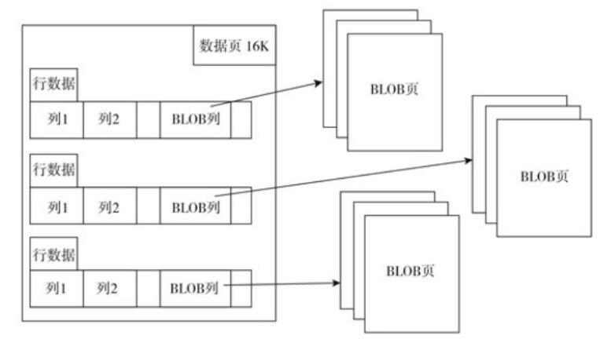

MySQL中的变量类型
类型属性
UNSIGNED
UNSIGNED 属性就是将数字类型无符号化，与C、C++这些程序语言中的unsigned含义相同。例如，INT的类型范围是-2147483648～2147483647， INTUNSIGNED的范围类型就是0～4294967295。但要注意使用这个属性时可能会出现错误和无法预料的情况，例如：
1 | +-------+-------------------------------------------------------------------------------+ |
上面 a-b 在windows系统直接报错，不卖关子了，是因为a-b即-1是0xFFFFFFFF，只是0xFFFFFFFF可以代表两种值：对于无符号的整型值，其是整型数的最大值，即4294967295；对于有符号的整型数来说，第一位代表符号位，如果是1，表示是负数，这时应该是取反加1得到负数值，即-1，-1超出了 UNSIGNED 的范围就直接报错了，所以这个谨慎使用。
基本变量
日期和时间类型
| 类型 | 空间 | 特点 |
|---|---|---|
| DATETIME | 8 BYTE | 既显示日期，也显示时间，时间范围较大 |
| DATE | 3 BYTE | 只显示日期，范围同DATETIME |
| TIME | 3 BYTE | 只显示时间，范围可正可负，可表示时间间隔 |
| TIMESTAMP | 4 BYTE | 既显示日期，也显示时间，不过比DATETIME范围小 |
| YEAR | 1 BYTE | 显示年份，可以指定宽度 |
日期函数可能是比较常使用的一种函数。下面介绍一些最为常用的日期函数。
- NOW、CURRENT_TIMESTAMP和SYSDATE
- CURRENT_TIMESTAMP是NOW的同义词，也就是说两者是相同的。
- SYSDATE函数返回的是执行到当前函数时的时间，而NOW返回的是执行SQL语句时的时间。
例如：
1 | mysql> create table t (a int, b timestamp default current_timestamp); |
数字类型
整型
| 类型 | 空间 | 范围 |
|---|---|---|
| TINYINT | 1 BYTES | -128 ~ 127 |
| SMALLINT | 2 BYTES | … |
| MEDIUMINT | 3 BYTES | … |
| INT | 4 BYTES | -2147483648 ~ 2147483647 |
| BIGINT | 8 BYTES | … |
浮点型（非精确类型）
| 类型 | 空间 | 范围 |
|---|---|---|
| FLOAT | 4 bytes | 单精度 |
| DOUBLE | 8 bytes | 双精度 |
高精度类型
DECIMAL 用于保存必须为确切精度的值。
ref: 《阿里巴巴Java开发手册》
【强制】小数类型为 decimal，禁止使用 float和 double。 说明：float和 double在存储的时候，存在精度损失的问题，很可能在值的比较时，得到不 正确的结果。如果存储的数据范围超过 decimal的范围，建议将数据拆成整数和小数分开存储
使用：decimal(a,b)
参数说明：
1 | - a:指定小数点左边和右边可以存储的十进制数字的最大个数，最大为65。 |
位类型
位类型，即BIT数据类型可用来保存位字段的值。BIT(M)类型表示允许存储M位数值，M范围为1到64，占用的空间为 (M+7)/8 字节。
字符类型
拓展：关于编码
ASCII: ASCII 码一共规定了128个字符的编码，比如空格SPACE是32（二进制00100000），大写的字母A是65（二进制01000001）。这128个符号（包括32个不能打印出来的控制符号），只占用了一个字节的后面7位，最前面的一位统一规定为0。显然 ASCII码 只能满足美国人的需求。
UNICODE：万国码。Unicode 当然是一个很大的集合，现在的规模可以容纳100多万个符号。需要注意的是，Unicode 只是一个符号集，它只规定了符号的二进制代码，却没有规定这个二进制代码应该如何存储，这里就有两个严重的问题，第一个问题是，如何才能区别 Unicode 和 ASCII ？计算机怎么知道三个字节表示一个符号，而不是分别表示三个符号呢？第二个问题是，我们已经知道，英文字母只用一个字节表示就够了，如果 Unicode 统一规定，每个符号用三个或四个字节表示，那么每个英文字母前都必然有二到三个字节是0，这对于存储来说是极大的浪费，文本文件的大小会因此大出二三倍，这是无法接受的。
UTF-8：这里的关系是，UTF-8 是 Unicode 的实现方式之一。UTF-8 最大的一个特点，就是它是一种变长的编码方式。它可以使用1~4个字节表示一个符号，根据不同的符号而变化字节长度。
字符串类型指 CHAR 和 VARCHAR、BINARY 和 VARBINARY、BLOB 和 TEXT、ENUM 和 SET。
| 类型 | 大小 | 用途 |
| ———- | ————————- | ——————————- |
| CHAR | 0-255 (2^8) bytes | 定长字符串 |
| VARCHAR | 0-65535 (2^16) bytes | 变长字符串 |
| TINYBLOB | 0-255 (2^8) bytes | 不超过 255 个字符的二进制字符串 |
| BLOB | 0-65535 (2^16) bytes | 二进制形式的长文本数据 |
| MEDIUMBLOB | 0-16777215 (2^24) bytes | 二进制形式的中等长度文本数据 |
| LONGBLOB | 0-4294967295 (2^32) bytes | 二进制形式的极大文本数据 |
| TINYTEXT | 0-255 (2^8) bytes | 短文本字符串 |
| TEXT | 0-65535 (2^16) bytes | 长文本数据 |
| MEDIUMTEXT | 0-16777215 (2^24) bytes | 中等长度文本数据 |
| LONGTEXT | 0-4294967295 (2^32) bytes | 极大文本数据 |
CHAR 和 VARCHAR
- CHAR(n) 和 VARCHAR(n) 中括号中 n 代表字符的个数，并不代表字节个数，比如 CHAR(30) 就可以存储 30 个字符。
- 对于 CHAR 类型的字符串，MySQL 数据库会自动对存储列的右边进行填充（RightPadded）操作，直到字符串达到指定的长度N。而在读取该列时，MySQL 数据库会自动将填充的字符删除。
- VARCHAR 类型存储变长字段的字符类型，与 CHAR 类型不同的是，其存储时需要在前缀长度列表加上实际存储的字符，该字符占用1～2字节的空间。当存储的字符串长度小于255字节时，其需要1字节的空间，当大于255字节时，需要2字节的空间。所以，对于单字节的 latin1 来说，CHAR（10）占用10个字节这是毫无疑问的，而 VARCHAR（10）的最大占用空间数是11字节，因为其需要1字节来存放字符长度。
- CHAR 和 VARCHAR 类型类似，但它们保存和检索的方式不同。它们的最大长度和是否尾部空格被保留等方面也不同。在存储或检索过程中不进行大小写转换。
ref: 《阿里巴巴Java开发手册》
【强制】varchar是可变长字符串，不预先分配存储空间，长度不要超过 5000，如果存储长度大于此值，定义字段类型为 text，独立出来一张表，用主键来对应，避免影响其它字段索引效率。
BINARY 和 VARBINARY
BINARY 和 VARBINARY 类似于 CHAR 和 VARCHAR，不同的是它们包含二进制字符串而不要非二进制字符串。也就是说，它们包含字节字符串而不是字符字符串。这说明它们没有字符集，对其排序和比较都是按照二进制值进行对比。BINARY（N）和 VARBINARY（N）中的 N 指的是字节长度。
BLOB 和 TEXT
在大多数情况下，可以将 BLOB 类型的列视为足够大的 VARBINARY 类型的列。同样，也可以将TEXT类型的列视为足够大的 VARCHAR 类型的列。然而，BLOB 和 TEXT 在以下几个方面又不同于 VARBINARY 和 VARCHAR：
- 在BLOB和TEXT类型的列上创建索引时，必须指定索引前缀的长度。而VARCHAR和VARBINARY的前缀长度是可选的。
- BLOB和TEXT类型的列不能有默认值。
- 在排序时只使用列的前max_sort_length个字节。
另外还有一点需要注意，即 BLOB 和 TEXT 的存储也与其他类型不同。在数据库中，最小的存储单元是页（也可以称为块）。为了有效存储列类型为BLOB或TEXT的大数据类型，一般将列的值存放在行溢出页（其他页/块），而数据页存储的行数据只包含BLOB或TEXT类型数据列前一部分数据。例如InnoDB存储引擎只存储前20字节，而该列的完整数据则存放在BLOB的行溢出页中。在这种方式下，数据页中能存放大量的行数据，从而提高了数据的查询效率，而且Innodb会将大 VARCHAR 类型字符串（如VARCHAR（65530））自动转化为 TEXT 或 BLOB 类型。

ENUM 和 SET
ENUM和SET类型都是集合类型，不同的是ENUM类型最多可枚举65536个元素，而SET类型最多枚举64个元素。
1 | mysql> create table t (user_name varchar(30), sex enum('male', 'female')); |